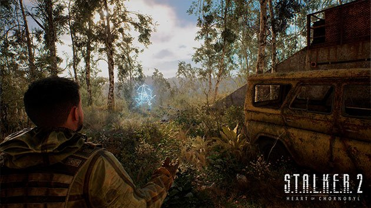
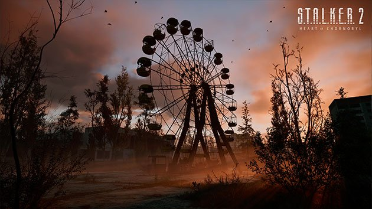

Тут ви можете написати свій власний вступний текст. Наприклад: це некстген-продовження видатної франшизи від GSC Game World, яку тепло зустріли гравці та критики. Пориньте у Чорнобильську зону відчуження, сповнену небезпечних ворогів, смертельних аномалій і потужних артефактів.



